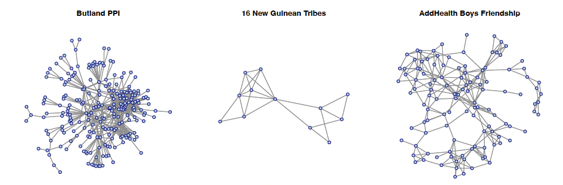
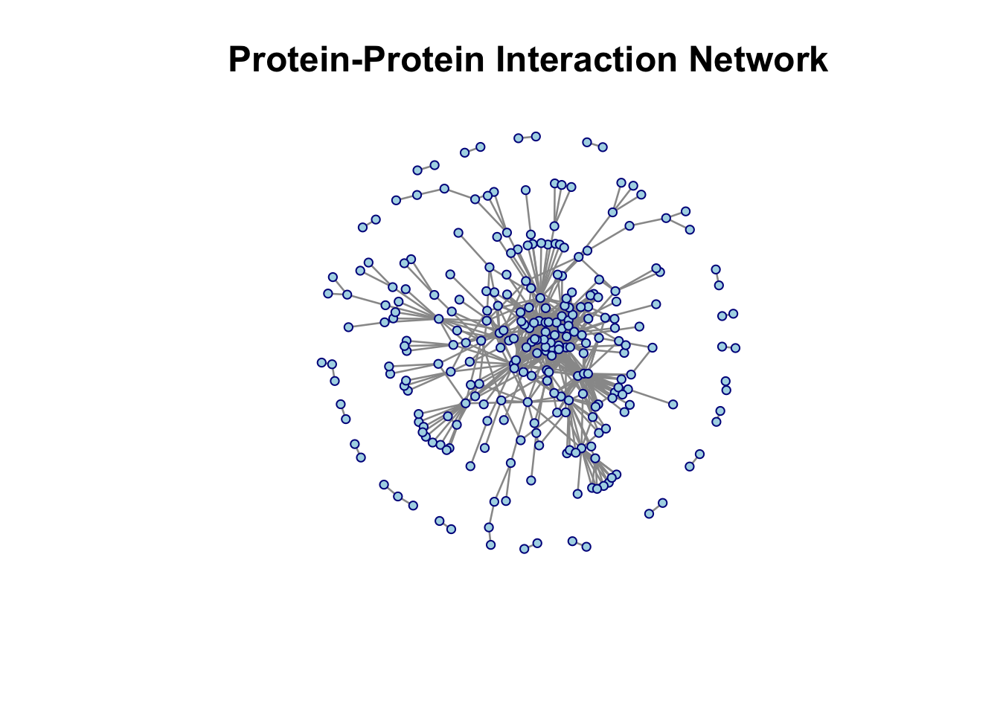
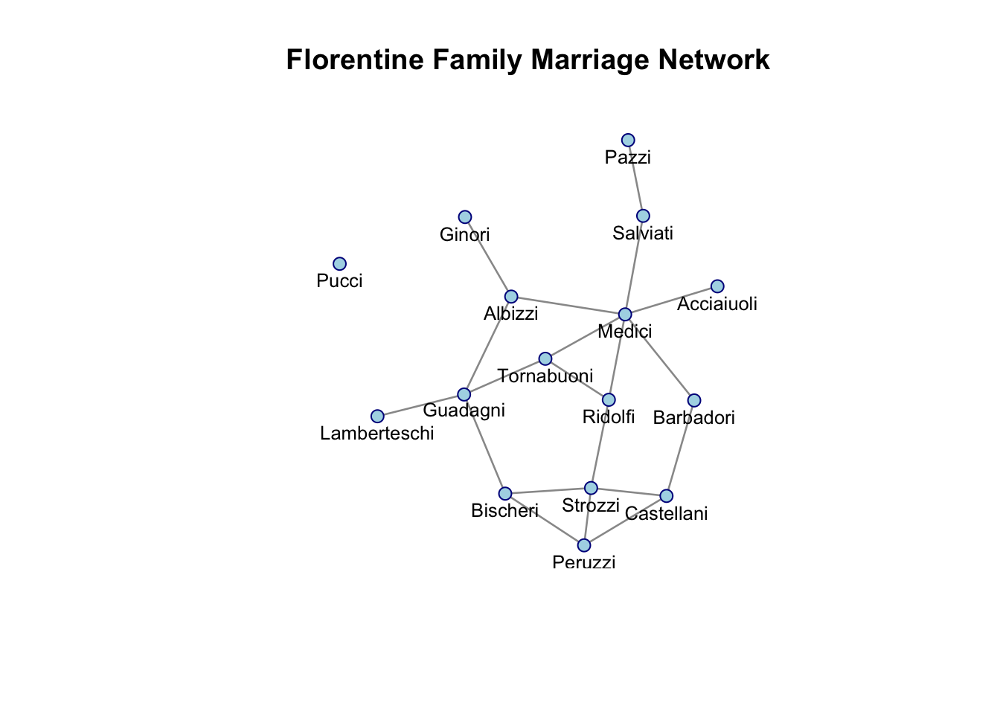
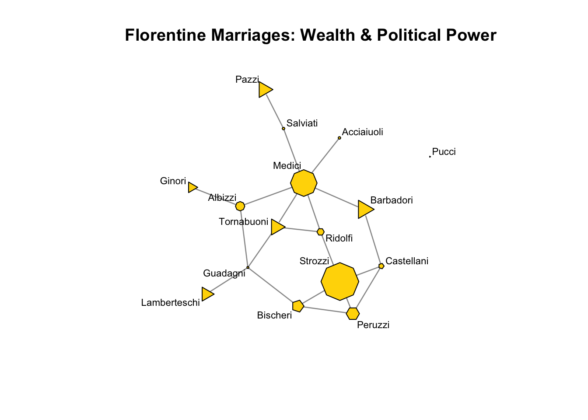

# Load packages
library(networkdata)
library(sna)
library(network)Ever wondered how to map friendships, track protein interactions, or visualize who’s connected to whom in Renaissance Florence? This tutorial will walk you through the basics of visualizing and analyzing networks in R. Don’t worry if you’re new to this, we’ll start simple and build up gradually.

Note
In this tutirial, we’ll work with undirected networks for simplicity and easier visualization. While some of these relationships could be considered directed in real life (e.g., one person nominate another as a freiend), treating them as undirected in this tutorial helps us focus on fundamental concepts without getting tangled in the complexities of directed network analysis. We’ll get to the directed network later.
2. Getting Started: SNA R Packages
Before we dive into the fun visualization stuff, let’s get our toolkit. We’ll use three main packages:
Tip
network: Creates and manipulates network objectssna: Provides tools for network analysis and visualizationnetworkdata: Contains example network datasets
3. Creating Network Objects: Two Ways to Build Your Network
Networks can be stored in different formats, let’s look at the two most common formats: edgelist and adjacency matrix.
3.1 Edge List Format
An edge list is simply a two-column list where each row says “A is connected to B.”
Note
Dataset: Butland Protein-Protein Interaction (PPI) Network
This network represents physical interactions between two proteins. Each node is a protein, and each edge means two proteins physically interact with each other. Scientists mapped these interactions using a technique called yeast two-hybrid screening.
- Type: Undirected (if protein A interacts with B, then B interacts with A)
- Nodes: Proteins
- Edges: Protein-protein interactions
#get the data (this data is from `network` package)
data("butland_ppi")
#create network from edge list
nw_ppi <- network(butland_ppi, matrix.type = "edgelist", directed = FALSE) # proteins interact mutually
#check network properties
network.size(nw_ppi) # how many proteins?[1] 270network.edgecount(nw_ppi) # how many interactions?[1] 716
Tip
Use help("butland_ppi") to learn about the dataset in the networkdata package.
3.2 Adjacency Matrix Format
An adjacency matrix is like a multiplication table, but instead of showing products, it shows connections. If there’s a connection from node i to node j, you put a 1 in row i, column j. No connection? Put a 0.
Note
Dataset: New Guinean Highland Tribes
This classic dataset comes from anthropological research on 16 tribes in the Eastern Central Highlands of New Guinea, studied during the 1960s. The relationships here are about alliances and conflicts between tribes. We’ll focus on positive relationships (alliances, trade partnerships, friendly interactions). Fun fact: This dataset has been used in social network analysis teaching for decades!
- Type: Undirected (alliances are typically mutual)
- Nodes: 16 Highland tribes
- Edges: Positive relationships (friendships, alliances, intermarriage)
#get the data
data("tribes")
#extract positive relationships (try help("tribes"), attributes(tribes))
tribes_pos <- tribes[, , 1]
#create network from adjacency matrix
nw_tribes <- network(tribes_pos,
matrix.type = "adjacency",
directed = FALSE)
Tip
Check if a matrix is symmetric with isSymmetric(your_matrix) to verify it’s direction.
4. Working with Network Components
# Get component information
comp_info <- component.dist(nw_ppi)
# comp_info contains:
# - $membership: which component each node belongs to
# - $csize: size of each component
# Extract the largest component
largest_comp <- which(comp_info$membership == which.max(comp_info$csize))
nw_ppi_largest <- get.inducedSubgraph(nw_ppi, v = largest_comp)Why focus on the largest component?
- Isolated nodes or small groups may represent data errors or uninteresting cases
- Statistical measures are more meaningful in connected networks
- Visualization is clearer without scattered isolated nodes
5. Adding Node Attributes
So far, our nodes are just dots. But in real life, people (and proteins, and tribes) have characteristics!
Note
****Dataset: AddHealth Adolescent Friendship Network**
The National Longitudinal Study of Adolescent to Adult Health (AddHealth) is one of the most famous social network datasets in existence. It surveyed students in schools across the U.S., asking “who are your friends?” We’ll work with community 9 and focus on boys’ friendship networks. This dataset is gold for studying peer influence, social integration, and how friendships form during adolescence.
Note: While the original data includes directed friendship nominations (you might list someone as a friend who doesn’t list you back), we’ll treat these as undirected for this tutorial. If there’s any connection between two people (one student nominate another as friends), we’ll count it as a mutual friendship.
- Type: Undirected (for our demonstration)
- Nodes: Male students in AddHealth community 9
- Edges: Friendship connections
- Attributes: Race, grade level, and more
#get tge friendship network filtered for boys
data("addhealth9")
boys_only <- addhealth9$X[, "female"] == 0
boys_id <- which(boys_only)
#filter edges to keep only boy-to-boy friendships
edges_boys <- addhealth9$E[addhealth9$E[, 1] %in% boys_id &
addhealth9$E[, 2] %in% boys_id, ]
# create network
nw_boys <- network(edges_boys, matrix.type = "edgelist", directed = FALSE)
#add attributes using the %v% operator
nw_boys %v% "race" <- addhealth9$X[boys_id, "race"]
nw_boys %v% "grade" <- addhealth9$X[boys_id, "grade"]
Tip
The %v% operator is your friend for vertex attributes! Think of it as saying “this network’s vertices have this property.” Use list.vertex.attributes(nw_boys) to see all available attributes.
6. Visualizing Networks
Alright, time for the fun part! Network plots can be beautiful, informative, or completely messy. The difference often comes down to choosing the right layout and visual parameters.
6.1 Basic Network Plot
plot(nw_ppi,
main = "Protein-Protein Interaction Network",
cex.main = 1.5, # title size
vertex.cex = 1.0, # node size
edge.col = "gray60", # edge color
vertex.col = "lightblue", # node color
vertex.border = "darkblue", # node border color
mode = "fruchtermanreingold", # layout algorithm
pad = 0.7) # padding around plot
6.2 Displaying Node Labels
Sometimes you want to know which node is which. That’s where labels come in handy.
Note
Dataset: Florentine Marriage Network Welcome to Renaissance Florence! This famous dataset shows marriage alliances between the most powerful families in 15th-century Florence. Each node is a wealthy family, and edges represent marriages between families. The Medici family famously used strategic marriages to build political power.
- Type: Undirected (marriage creates ties between both families)
- Nodes: 16 elite Florentine families
- Edges: Marital unions between families
data(florentine)
plot(flomarriage,
displaylabels = TRUE, # show node names
vertex.cex = 1.5,
label.cex = 0.8, # label size
label.pos = 1, # label position (5 = center)
edge.col = "gray60",
vertex.col = "lightblue",
vertex.border = "darkblue",
main = "Florentine Family Marriage Network")
Tip
Labels can overlap in dense networks. Try adjusting label.pos (1=below, 2=left, 3=above, 4=right, 5=center) or label.cex to make them more readable.
6.2.1 Extension
We can make our visualization tell a richer story by using node attributes to control visual properties. The Florentine marriage dataset includes information about each family’s wealth and political power (number of seats on the city council, called “priorates”). Let’s use these to create a more informative plot:
#attributes are available
list.vertex.attributes(flomarriage)[1] "na" "priorates" "totalties" "vertex.names" "wealth" #extract wealth and priorates (political representation)
wealth <- flomarriage %v% "wealth"
priorates <- flomarriage %v% "priorates"
#scale wealth to appropriate node sizes (1-4 range works well)
node_sizes <- wealth / 20
#create node shapes based on political representation
#more priorates = more sides (more politically important)
#map priorates to number of polygon sides
node_sides <- ifelse(priorates >= 50, 8, # Octagon for high power (50+)
ifelse(priorates >= 30, 6, # Hexagon for medium-high (30-49)
ifelse(priorates >= 10, 5, # Pentagon for medium (10-29)
ifelse(priorates > 0, 4, 3)))) # Diamond (4) for low, Triangle (3) for none
#create the enhanced plot
plot(flomarriage,
displaylabels = TRUE,
vertex.cex = node_sizes, # Size by wealth
vertex.sides = node_sides, # Shape by political power
label.cex = 0.7,
edge.col = "gray60",
vertex.col = "gold", # Gold for wealthy families
main = "Florentine Marriages: Wealth & Political Power")
What does this reveal? The Medici family stands out with both high wealth (large node) and significant political representation (many-sided polygon).
7. Finding Isolated Nodes and Components
#get component membership for all nodes
comp <- component.dist(flomarriage)
#find isolated nodes (nodes not in the largest component)
family_names <- network.vertex.names(flomarriage)
isolated <- family_names[comp$membership != which.max(comp$csize)]
print(isolated) # "Pucci"[1] "Pucci"8. Quick Reference
| Function | Purpose | Example |
|---|---|---|
network() |
Create network object | network(edges, matrix.type = "edgelist") |
degree() |
Calculate node degrees | degree(nw, gmode = "graph") |
component.dist() |
Find connected components | component.dist(nw) |
get.inducedSubgraph() |
Extract subnetwork | get.inducedSubgraph(nw, v = nodes) |
network.size() |
Count nodes | network.size(nw) |
network.edgecount() |
Count edges | network.edgecount(nw) |
network.vertex.names() |
Get node names | network.vertex.names(nw) |
%v% |
Set/get vertex attributes | nw %v% "race" <- values |
plot() |
Visualize network | plot(nw, displaylabels = TRUE) |
9. Resources to Keep Learning
Eric Kolaczyk Statistical Analysis of Network Data (2009). Springer http://link.springer.com/book/10.1007%2F978-0-387-88146-1
Eric Kolaczyk and Gabor Csardi Statistical Analysis of Network Data with R (2014). Springer http://link.springer.com/book/10.1007%2F978-1-4939-0983-4
David Easley and Jon Kleinberg “Networks, Crowds, and Markets: Reasoning about a Highly Connected World (2010). Available free online. https://www.cs.cornell.edu/home/kleinber/networks-book/
This tutorial is based on coursework from STATS 218: Social Network Analysis. All datasets are from the networkdata package.